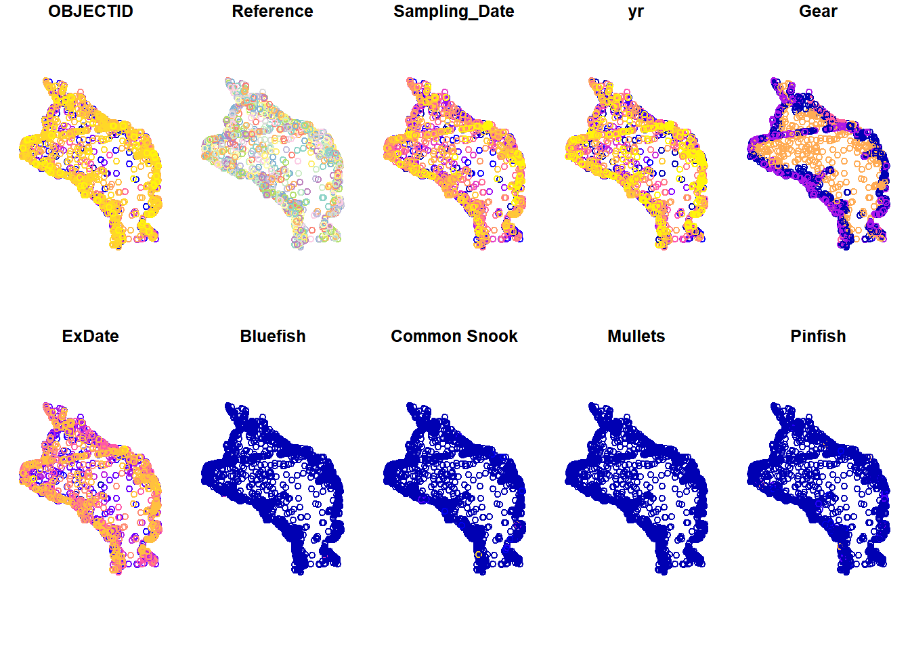
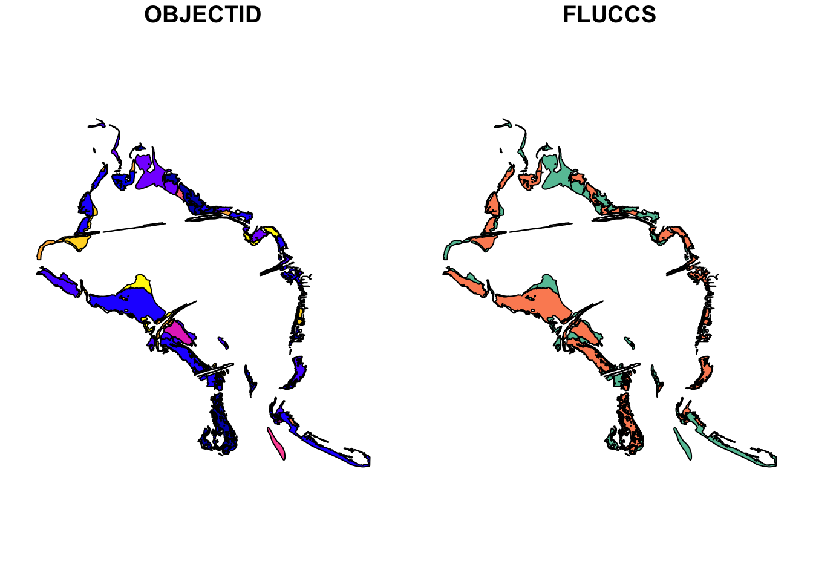
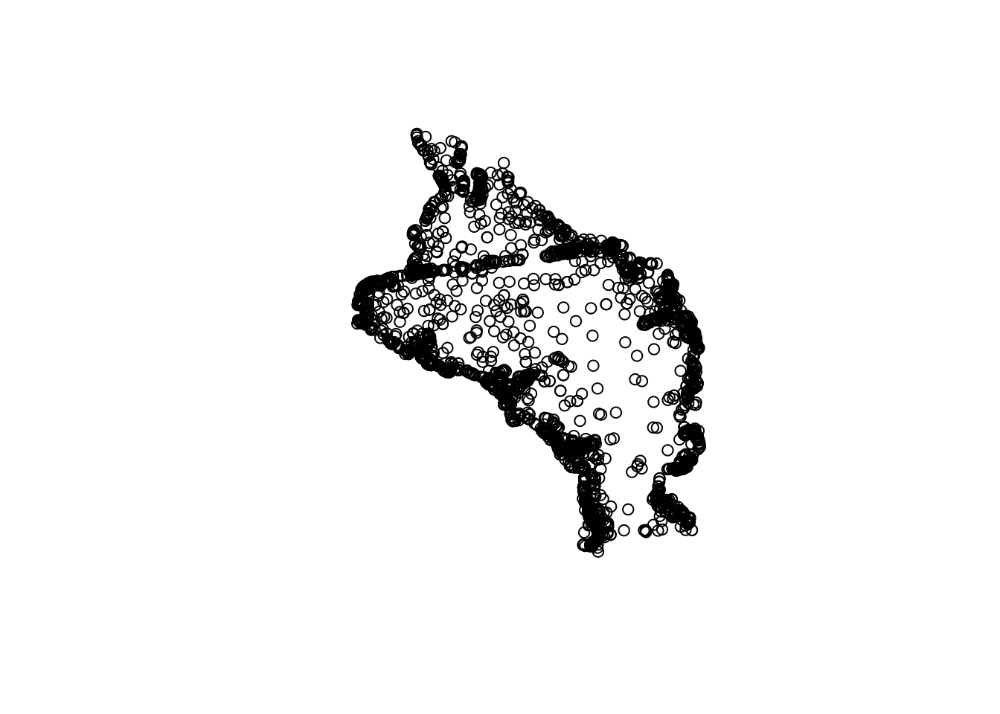
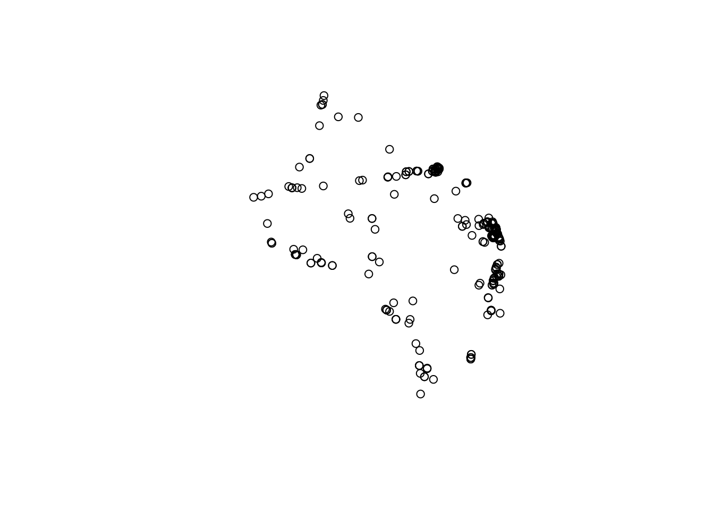
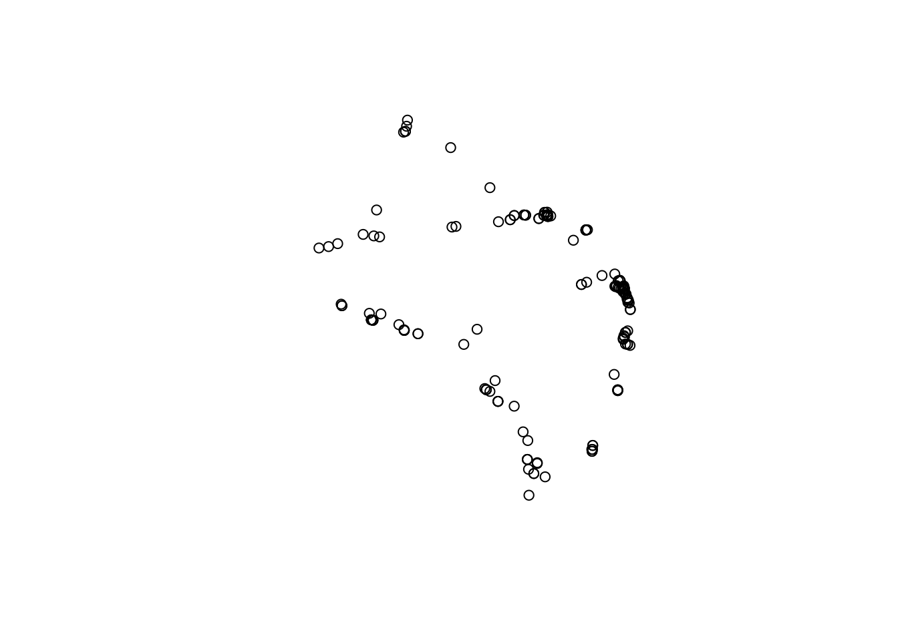
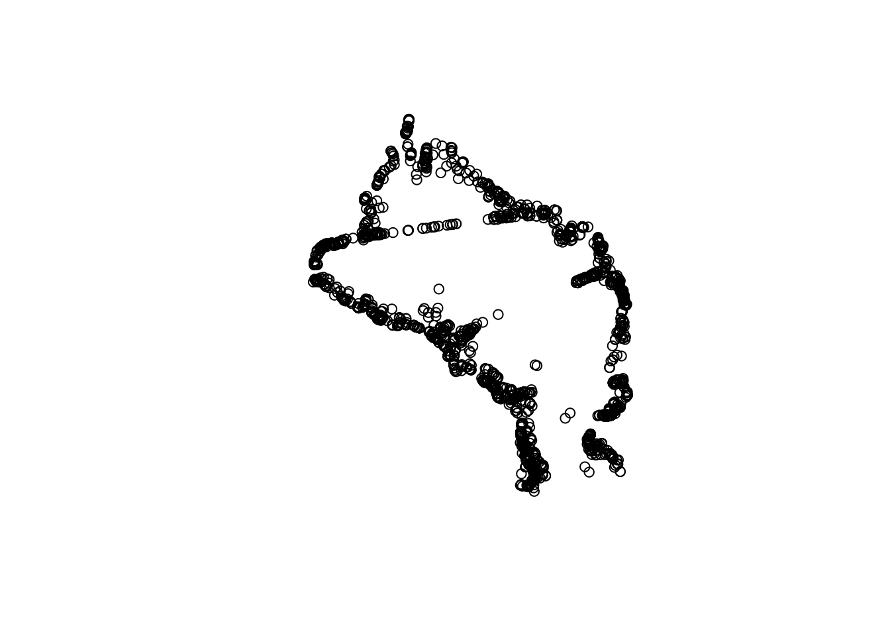
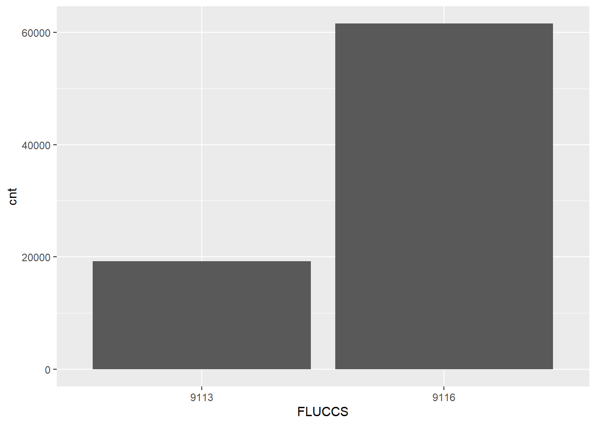
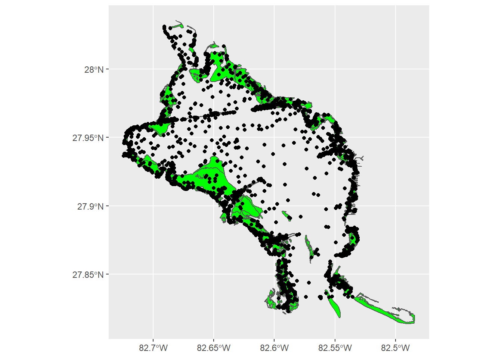

Spatial data analysis and mapping
Get the lesson R script: mapping.R
Get the lesson data: download zip
Lesson Outline
Lesson Exercises
R has been around for over twenty years and most of its use has focused on statistical analysis. Tools for spatial analysis have been developed in recent years that allow the use of R as a full-blown GIS with capabilities similar or even superior to commerical software. This lesson will focus on geospatial analysis using the simple features package. We will focus entirely on working with vector data in this lesson, but checkout the raster and rgdal packages if you want to work with raster data in R. There are several useful vignettes in the raster link.
The goals for today are:
Understand the vector data structure
Understand how to import and structure vector data in R
Understand how R stores spatial data using the simple features package
Execute basic geospatial functions in R
Vector data
Most of us are probably familiar with the basic types of spatial data and their components. We’re going to focus entirely on vector data for this lesson because these data are easily conceptualized as features or discrete objects with spatial information. We’ll discuss some of the details about this later. Raster data by contrast are stored in a regular grid where the cells of the grid are associated with values. Raster data are more common for data with continuous coverage, such as climate or weather layers.
Vector data come in three flavors. The simplest is a point, which is a 0-dimensional feature that can be used to represent a specific location on the earth, such as a single tree or an entire city. Linear, 1-dimensional features can be represented with points (or vertices) that are connected by a path to form a line and when many points are connected these form a polyline. Finally, when a polyline’s path returns to its origin to represent an enclosed 2-dimensional space, such as a forest, watershed boundary, or lake, this forms a polygon.

Image source
All vector data are represented similarly, whether they’re points, lines or polygons. Points are defined by a single coordinate location, whereas a line or polygon is several points with a grouping variable that distinguishes one object from another. In all cases, the aggregate dataset is composed of one or more features of the same type (points, lines, or polygons).
There are two other pieces of information that are included with vector data. The attributes that can be associated with each feature and the coordinate reference system or CRS. The attributes can be any supporting information about a feature, such as a text description or summary data about the features. You can identify attributes as anything in a spatial dataset that is not explicitly used to define the location of the features.
The CRS is used to establish a frame of reference for the locations in your spatial data. The chosen CRS ensures that all features are correctly referenced relative to each other, especially between different datasets. As a simple example, imagine comparing length measurements for two objects where one was measured in centimeters and another in inches. If you didn’t know the unit of measurement, you could not compare relative lengths. The CRS is similar in that it establishes a common frame of reference, but for spatial data. An added complication with spatial data is that location can be represented in both 2-dimensional or 3-dimensional space. This is beyond the scope of this lesson, but for any geospatial analysis you should be sure that:
the CRS is the same when comparing datasets, and
the CRS is appropriate for the region you’re looking at.

Image source
To summarize, vector data include the following:
spatial data (e.g., latitude, longitude) as points, lines, or polygons
attributes
a coordinate reference system
These are all the pieces of information you need to recognize in your data when working with features in R.
Simple features
R has a long history of packages for working with spatial data. For many years, the sp package was the standard and most widely used toolset for working with spatial data in R. This package laid the foundation for creating spatial data classes and methods in R, but unfortunately its development predated a lot of the newer tools that are built around the tidyverse. This makes it incredibly difficult to incorporate sp data objects with these newer data analysis workflows.
The simple features or sf package was developed to streamline the use of spatial data in R and to align its functionality with those provided in the tidyverse. The sf package is already beginning to replace sp as the fundamental spatial model in R for vector data. A major advantage of sf, as you’ll see, is its intuitive data structure that retains many familiar components of the data.frame (or more accurately, tibble).
Simple Features is a hierarchical data model that represents a wide range of geometry types - it includes all common vector geometry types (but does not include raster) and even allows geometry collections, which can have multiple geometry types in a single object. From the first sf package vignette we see:

You’ll notice that these are the same features we described above, with the addition of “multi” features and geometry collections that include more than one type of feature.
Exercise 12
Let’s get setup for this lesson. We’ll make sure we have the necessary packages installed and loaded. Then we’ll import our datasets.
Open a new script in your RStudio project or within RStudio cloud.
At the top of the script, load the
tidyverse,sf, andmapviewlibraries. Don’t forget you can useinstall.packages(c('tidyverse', 'sf', 'mapview'))if the packages aren’t installed.Load the
fishdat.csv,statloc.csv, andsgdat.shpdatasets from your data folder. For the csv files, useread_csv()and for the shapefile, use thest_read()function from thesfpackage. The shapefile is seagrass polygon data for Old Tampa Bay in 2016. As before, assign each loaded dataset to an object in your workspace.
# load libraries
library(tidyverse)
library(sf)
library(mapview)
# load the fish data
fishdat <- read_csv('data/fishdat.csv')
# load the station data
statloc <- read_csv('data/statloc.csv')
# load the sgdat shapefile
sgdat <- st_read('data/sgdat.shp')Creating spatial data with simple features
Now that we’re setup, let’s talk about how the sf package can be used. After the package is loaded, you can check out all of the methods that are available for sf data objects. Many of these names will look familiar if you’ve done geospatial analysis before. We’ll use some of these a little bit later.
methods(class = 'sf')## [1] [ [[<- $<-
## [4] aggregate anti_join arrange
## [7] as.data.frame cbind coerce
## [10] dbDataType dbWriteTable distinct
## [13] dplyr_reconstruct filter full_join
## [16] gather group_by group_split
## [19] identify initialize inner_join
## [22] left_join mapView merge
## [25] mutate nest plot
## [28] print rbind rename
## [31] right_join rowwise sample_frac
## [34] sample_n select semi_join
## [37] separate_rows separate show
## [40] slice slotsFromS3 spread
## [43] st_agr st_agr<- st_area
## [46] st_as_s2 st_as_sf st_bbox
## [49] st_boundary st_buffer st_cast
## [52] st_centroid st_collection_extract st_convex_hull
## [55] st_coordinates st_crop st_crs
## [58] st_crs<- st_difference st_filter
## [61] st_geometry st_geometry<- st_interpolate_aw
## [64] st_intersection st_intersects st_is_valid
## [67] st_is st_join st_line_merge
## [70] st_m_range st_make_valid st_nearest_points
## [73] st_node st_normalize st_point_on_surface
## [76] st_polygonize st_precision st_reverse
## [79] st_sample st_segmentize st_set_precision
## [82] st_shift_longitude st_simplify st_snap
## [85] st_sym_difference st_transform st_triangulate
## [88] st_union st_voronoi st_wrap_dateline
## [91] st_write st_z_range st_zm
## [94] summarise transform transmute
## [97] ungroup unite unnest
## see '?methods' for accessing help and source codeAll of the functions and methods in sf are prefixed with st_, which stands for ‘spatial and temporal’. This is kind of confusing but this is in reference to standard methods available in PostGIS, an open-source backend that is used by many geospatial platforms. An advantage of this prefixing is all commands are easy to find with command-line completion in sf, in addition to having naming continuity with existing software.
There are two ways to create a spatial data object in R, i.e., an sf object, using the sf package.
Directly import a shapefile
Convert an existing R object with latitude/longitude data that represent point features
We’ve already imported a shapefile in exercise 12, so let’s look at its structure to better understand the sf object. The st_read() function can be used for import. Setting quiet = T will keep R from being chatty when it imports the data.
sgdat <- st_read('data/sgdat.shp', quiet = T)
sgdat## Simple feature collection with 575 features and 2 fields
## geometry type: POLYGON
## dimension: XY
## bbox: xmin: -82.72462 ymin: 27.81386 xmax: -82.48426 ymax: 28.03548
## geographic CRS: WGS 84
## First 10 features:
## OBJECTID FLUCCS geometry
## 1 211 9113 POLYGON ((-82.64982 28.0200...
## 2 396 9116 POLYGON ((-82.60445 27.9828...
## 3 398 9113 POLYGON ((-82.58985 27.8230...
## 4 399 9113 POLYGON ((-82.62025 27.9946...
## 5 416 9116 POLYGON ((-82.62363 28.0001...
## 6 451 9113 POLYGON ((-82.58943 27.8232...
## 7 491 9113 POLYGON ((-82.60703 27.8742...
## 8 499 9113 POLYGON ((-82.54753 27.9595...
## 9 515 9116 POLYGON ((-82.53872 27.8979...
## 10 539 9113 POLYGON ((-82.54837 27.9617...What does this show us? Let’s break it down.

- In green, metadata describing components of the
sfobject - In yellow, a simple feature: a single record, or
data.framerow, consisting of attributes and geometry - In blue, a single simple feature geometry (an object of class
sfg) - In red, a simple feature list-column (an object of class
sfc, which is a column in the data.frame)
We’ve just imported a polygon dataset with 575 features and 2 fields. The dataset is projected using the WGS 84 geographic CRS (i.e., latitude/longitude). You’ll notice that the actual dataset looks very similar to a regular data.frame, with some interesting additions. The header includes some metadata about the sf object and the geometry column includes the actual spatial information for each feature. Conceptually, you can treat the sf object like you would a data.frame.
Easy enough, but what if we have point data that’s not a shapefile? You can create an sf object from any existing data.frame so long as the data include coordinate information (e.g., columns for longitude and latitude) and you know the CRS (or can make an educated guess). We can do this with our fishdat and statloc csv files that we imported.
str(fishdat)## spec_tbl_df [2,844 × 12] (S3: spec_tbl_df/tbl_df/tbl/data.frame)
## $ OBJECTID : num [1:2844] 1550020 1550749 1550750 1550762 1550828 ...
## $ Reference : chr [1:2844] "TBM1996032006" "TBM1996032004" "TBM1996032004" "TBM1996032207" ...
## $ Sampling_Date: Date[1:2844], format: "1996-03-20" "1996-03-20" ...
## $ yr : num [1:2844] 1996 1996 1996 1996 1996 ...
## $ Gear : num [1:2844] 300 22 22 20 160 300 300 300 300 22 ...
## $ ExDate : POSIXct[1:2844], format: "2018-04-12 10:27:38" "2018-04-12 10:25:23" ...
## $ Bluefish : num [1:2844] 0 0 0 0 0 0 0 0 0 0 ...
## $ Common Snook : num [1:2844] 0 0 0 0 0 0 0 0 0 0 ...
## $ Mullets : num [1:2844] 0 0 0 0 0 0 0 0 0 0 ...
## $ Pinfish : num [1:2844] 0 54 0 80 0 0 0 0 1 1 ...
## $ Red Drum : num [1:2844] 0 0 1 0 4 0 0 0 0 0 ...
## $ Sand Seatrout: num [1:2844] 1 0 0 0 0 1 5 66 0 0 ...
## - attr(*, "spec")=
## .. cols(
## .. OBJECTID = [32mcol_double()[39m,
## .. Reference = [31mcol_character()[39m,
## .. Sampling_Date = [34mcol_date(format = "")[39m,
## .. yr = [32mcol_double()[39m,
## .. Gear = [32mcol_double()[39m,
## .. ExDate = [34mcol_datetime(format = "")[39m,
## .. Bluefish = [32mcol_double()[39m,
## .. `Common Snook` = [32mcol_double()[39m,
## .. Mullets = [32mcol_double()[39m,
## .. Pinfish = [32mcol_double()[39m,
## .. `Red Drum` = [32mcol_double()[39m,
## .. `Sand Seatrout` = [32mcol_double()[39m
## .. )str(statloc)## spec_tbl_df [2,173 × 3] (S3: spec_tbl_df/tbl_df/tbl/data.frame)
## $ Reference: chr [1:2173] "TBM1996032006" "TBM1996032004" "TBM1996032207" "TBM1996042601" ...
## $ Latitude : num [1:2173] 27.9 27.9 27.9 28 27.9 ...
## $ Longitude: num [1:2173] -82.6 -82.6 -82.5 -82.7 -82.6 ...
## - attr(*, "spec")=
## .. cols(
## .. Reference = [31mcol_character()[39m,
## .. Latitude = [32mcol_double()[39m,
## .. Longitude = [32mcol_double()[39m
## .. )The st_as_sf() function can be used to make this data.frame into a sf object, but we first have to join the two datasets and tell R which column is the x-coordinates and which is the y-coordinates. We also have to specify a CRS - this is just a text string or number (i.e, EPSG) in a standard format for geospatial data. A big part of working with spatial data is keeping track of reference systems between different datasets. Remember that meaningful comparisons between datasets are only possible if the CRS is shared.
There are many, many types of reference systems and plenty of resources online that provide detailed explanations of the what and why behind the CRS (see spatialreference.org or this guide from NCEAS). For now, just realize that we can use a simple text string in R to indicate which CRS we want. Although this may not always be true, we can make an educated guess that the standard geographic projection with the WGS84 datum applies to our dataset.
Exercise 13
Let’s join the fishdat and statloc datasets and create an sf object using st_as_sf() function.
Join
fishdattostatlocusing theleft_join()function withby = "Reference"as the key.Use
st_as_sf()to make the joined dataset ansfobject. There are two arguments you need to specify withst_as_sf():coords = c('Longitude', 'Latitude')so R knows which columns in your dataset are the x/y coordinates andcrs = 4326to specifiy the CRS as WGS 84.When you’re done, inspect the dataset. How many features are there? What type of spatial object is this?
# Join the data
alldat <- left_join(fishdat, statloc, by = 'Reference')
# create spatial data object
alldat <- st_as_sf(alldat, coords = c('Longitude', 'Latitude'), crs = 4326)
# examine the sf objec
alldat
str(alldat)There’s a shortcut to specifying the CRS if you don’t know which one to use. Remember, for spatial anlaysis make sure to only work with datasets that have the same projections and coordinate systems. The st_crs() function tells us the CRS for an existing sf obj.
# check crs
st_crs(alldat)## Coordinate Reference System:
## User input: EPSG:4326
## wkt:
## GEOGCRS["WGS 84",
## DATUM["World Geodetic System 1984",
## ELLIPSOID["WGS 84",6378137,298.257223563,
## LENGTHUNIT["metre",1]]],
## PRIMEM["Greenwich",0,
## ANGLEUNIT["degree",0.0174532925199433]],
## CS[ellipsoidal,2],
## AXIS["geodetic latitude (Lat)",north,
## ORDER[1],
## ANGLEUNIT["degree",0.0174532925199433]],
## AXIS["geodetic longitude (Lon)",east,
## ORDER[2],
## ANGLEUNIT["degree",0.0174532925199433]],
## USAGE[
## SCOPE["unknown"],
## AREA["World"],
## BBOX[-90,-180,90,180]],
## ID["EPSG",4326]]When we created the alldat dataset, we could have used the CRS from the sgdat object that we created in exercise 12 by using crs = st_crs(sgdat) for the crs argument. This is often a quick shortcut for creating an sf object without having to look up the CRS number.
We can verify that both now have the same CRS.
# verify the polygon and point data have the same crs
st_crs(sgdat)## Coordinate Reference System:
## User input: WGS 84
## wkt:
## GEOGCRS["WGS 84",
## DATUM["World Geodetic System 1984",
## ELLIPSOID["WGS 84",6378137,298.257223563,
## LENGTHUNIT["metre",1]]],
## PRIMEM["Greenwich",0,
## ANGLEUNIT["degree",0.0174532925199433]],
## CS[ellipsoidal,2],
## AXIS["latitude",north,
## ORDER[1],
## ANGLEUNIT["degree",0.0174532925199433]],
## AXIS["longitude",east,
## ORDER[2],
## ANGLEUNIT["degree",0.0174532925199433]],
## ID["EPSG",4326]]st_crs(alldat)## Coordinate Reference System:
## User input: EPSG:4326
## wkt:
## GEOGCRS["WGS 84",
## DATUM["World Geodetic System 1984",
## ELLIPSOID["WGS 84",6378137,298.257223563,
## LENGTHUNIT["metre",1]]],
## PRIMEM["Greenwich",0,
## ANGLEUNIT["degree",0.0174532925199433]],
## CS[ellipsoidal,2],
## AXIS["geodetic latitude (Lat)",north,
## ORDER[1],
## ANGLEUNIT["degree",0.0174532925199433]],
## AXIS["geodetic longitude (Lon)",east,
## ORDER[2],
## ANGLEUNIT["degree",0.0174532925199433]],
## USAGE[
## SCOPE["unknown"],
## AREA["World"],
## BBOX[-90,-180,90,180]],
## ID["EPSG",4326]]Finally, you may often want to use another coordinate system, such as a projection that is regionally-specific. You can use the st_transform() function to quickly change and/or reproject an sf object. For example, if we want to convert a geographic to UTM projection:
alldatutm <- alldat %>%
st_transform(crs = '+proj=utm +zone=17 +datum=NAD83 +units=m +no_defs')
st_crs(alldatutm)## Coordinate Reference System:
## User input: +proj=utm +zone=17 +datum=NAD83 +units=m +no_defs
## wkt:
## PROJCRS["unknown",
## BASEGEOGCRS["unknown",
## DATUM["North American Datum 1983",
## ELLIPSOID["GRS 1980",6378137,298.257222101,
## LENGTHUNIT["metre",1]],
## ID["EPSG",6269]],
## PRIMEM["Greenwich",0,
## ANGLEUNIT["degree",0.0174532925199433],
## ID["EPSG",8901]]],
## CONVERSION["UTM zone 17N",
## METHOD["Transverse Mercator",
## ID["EPSG",9807]],
## PARAMETER["Latitude of natural origin",0,
## ANGLEUNIT["degree",0.0174532925199433],
## ID["EPSG",8801]],
## PARAMETER["Longitude of natural origin",-81,
## ANGLEUNIT["degree",0.0174532925199433],
## ID["EPSG",8802]],
## PARAMETER["Scale factor at natural origin",0.9996,
## SCALEUNIT["unity",1],
## ID["EPSG",8805]],
## PARAMETER["False easting",500000,
## LENGTHUNIT["metre",1],
## ID["EPSG",8806]],
## PARAMETER["False northing",0,
## LENGTHUNIT["metre",1],
## ID["EPSG",8807]],
## ID["EPSG",16017]],
## CS[Cartesian,2],
## AXIS["(E)",east,
## ORDER[1],
## LENGTHUNIT["metre",1,
## ID["EPSG",9001]]],
## AXIS["(N)",north,
## ORDER[2],
## LENGTHUNIT["metre",1,
## ID["EPSG",9001]]]]Basic geospatial analysis
As with any analysis, let’s take a look at the data to see what we’re dealing with before we start comparing the two.
plot(alldat)
plot(sgdat)
So we have lots of stations where fish have been caught and lots of polygons for seagrass. You’ll also notice that the default plotting method for sf objects is to create one plot per attribute feature. This is intended behavior but sometimes is not that useful (it can also break R if you have many attributes). Maybe we just want to see where the data are located independent of any of the attributes. We can accomplish this by plotting only the geometry of the sf object.
plot(alldat$geometry)
plot(sgdat$geometry)
To emphasize the point that the sf package plays nice with the tidyverse, let’s do a simple filter on the fisheries data to look at only the 2016 data. This is the same year as the seagrass data.
filt_dat <- alldat %>%
filter(yr == 2016)
plot(filt_dat$geometry)
Now let’s use the fisheries data and seagrass polygons to do a quick geospatial analysis. Our simple question is:
How many fish were caught where seagrass was observed in 2016?
The first task is to subset the 2016 fisheries data by locations where seagrass was observed. There are a few ways we can do this. The first is to make a simple subset where we filter the station locations using a spatial overlay with the seagrass polygons. With this approach we can see which stations were located over seagrass, but we don’t know which polygons they’re located in for the seagrass data.
fish_crop <- filt_dat[sgdat, ]
plot(fish_crop$geometry)
fish_crop## Simple feature collection with 145 features and 12 fields
## geometry type: POINT
## dimension: XY
## bbox: xmin: -82.7182 ymin: 27.82623 xmax: -82.53237 ymax: 28.02418
## geographic CRS: WGS 84
## [90m# A tibble: 145 x 13[39m
## OBJECTID Reference Sampling_Date yr Gear ExDate Bluefish
## [3m[90m<dbl>[39m[23m [3m[90m<chr>[39m[23m [3m[90m<date>[39m[23m [3m[90m<dbl>[39m[23m [3m[90m<dbl>[39m[23m [3m[90m<dttm>[39m[23m [3m[90m<dbl>[39m[23m
## [90m 1[39m 2[4m7[24m[4m3[24m[4m9[24m992 TBM20160… 2016-04-08 [4m2[24m016 20 2018-04-12 [90m11:06:24[39m 0
## [90m 2[39m 2[4m7[24m[4m4[24m[4m0[24m055 TBM20160… 2016-05-02 [4m2[24m016 160 2018-04-12 [90m11:06:24[39m 0
## [90m 3[39m 2[4m7[24m[4m4[24m[4m0[24m233 TBM20160… 2016-06-20 [4m2[24m016 20 2018-04-12 [90m11:06:40[39m 0
## [90m 4[39m 2[4m7[24m[4m4[24m[4m0[24m253 TBM20160… 2016-06-22 [4m2[24m016 20 2018-04-12 [90m11:06:40[39m 0
## [90m 5[39m 2[4m7[24m[4m4[24m[4m1[24m642 TBM20160… 2016-02-11 [4m2[24m016 20 2018-04-12 [90m11:06:13[39m 0
## [90m 6[39m 2[4m7[24m[4m4[24m[4m1[24m698 TBM20160… 2016-03-09 [4m2[24m016 20 2018-04-12 [90m11:06:13[39m 0
## [90m 7[39m 2[4m7[24m[4m4[24m[4m1[24m782 TBM20160… 2016-02-11 [4m2[24m016 20 2018-04-12 [90m11:06:03[39m 0
## [90m 8[39m 2[4m7[24m[4m4[24m[4m1[24m834 TBM20160… 2016-03-09 [4m2[24m016 20 2018-04-12 [90m11:06:04[39m 0
## [90m 9[39m 2[4m7[24m[4m4[24m[4m1[24m867 TBM20160… 2016-04-26 [4m2[24m016 160 2018-04-12 [90m11:06:16[39m 0
## [90m10[39m 2[4m7[24m[4m4[24m[4m2[24m220 TBM20160… 2016-05-17 [4m2[24m016 20 2018-04-12 [90m11:06:20[39m 0
## [90m# … with 135 more rows, and 6 more variables: `Common Snook` [3m[90m<dbl>[90m[23m,[39m
## [90m# Mullets [3m[90m<dbl>[90m[23m, Pinfish [3m[90m<dbl>[90m[23m, `Red Drum` [3m[90m<dbl>[90m[23m, `Sand Seatrout` [3m[90m<dbl>[90m[23m,[39m
## [90m# geometry [3m[90m<POINT [°]>[90m[23m[39mThe second and more complete approach is to intersect the two data objects to subset and combine the attributes. We can use st_intersection to both overlay and combine the attribute fields from the two data objects.
fish_int <- st_intersection(alldat, sgdat)
plot(fish_int$geometry)
fish_int## Simple feature collection with 1770 features and 14 fields
## geometry type: POINT
## dimension: XY
## bbox: xmin: -82.72437 ymin: 27.82277 xmax: -82.53105 ymax: 28.025
## geographic CRS: WGS 84
## [90m# A tibble: 1,770 x 15[39m
## OBJECTID Reference Sampling_Date yr Gear ExDate Bluefish
## [90m*[39m [3m[90m<dbl>[39m[23m [3m[90m<chr>[39m[23m [3m[90m<date>[39m[23m [3m[90m<dbl>[39m[23m [3m[90m<dbl>[39m[23m [3m[90m<dttm>[39m[23m [3m[90m<dbl>[39m[23m
## [90m 1[39m 1[4m6[24m[4m8[24m[4m2[24m543 TBM20040… 2004-01-02 [4m2[24m004 20 2018-04-12 [90m10:21:29[39m 0
## [90m 2[39m 1[4m8[24m[4m3[24m[4m3[24m156 TBM20041… 2004-11-24 [4m2[24m004 20 2018-04-12 [90m10:22:59[39m 0
## [90m 3[39m 2[4m0[24m[4m2[24m[4m9[24m572 TBM20010… 2001-03-23 [4m2[24m001 20 2018-04-12 [90m10:43:13[39m 0
## [90m 4[39m 2[4m2[24m[4m4[24m[4m8[24m030 TBM20020… 2002-09-03 [4m2[24m002 20 2018-04-12 [90m10:48:20[39m 0
## [90m 5[39m 2[4m4[24m[4m7[24m[4m5[24m686 TBM20070… 2007-06-11 [4m2[24m007 20 2018-04-12 [90m10:31:33[39m 0
## [90m 6[39m 2[4m6[24m[4m4[24m[4m0[24m416 TBD19961… 1996-10-15 [4m1[24m996 251 2018-04-12 [90m10:46:00[39m 0
## [90m 7[39m 2[4m6[24m[4m4[24m[4m2[24m233 TBD19961… 1996-10-15 [4m1[24m996 251 2018-04-12 [90m10:45:27[39m 0
## [90m 8[39m 2[4m6[24m[4m4[24m[4m2[24m326 TBD20001… 2000-10-24 [4m2[24m000 251 2018-04-12 [90m10:46:11[39m 0
## [90m 9[39m 2[4m6[24m[4m4[24m[4m3[24m460 TBD20041… 2004-10-26 [4m2[24m004 251 2018-04-12 [90m10:46:03[39m 0
## [90m10[39m 2[4m6[24m[4m4[24m[4m3[24m763 TBD19961… 1996-10-15 [4m1[24m996 251 2018-04-12 [90m10:45:15[39m 0
## [90m# … with 1,760 more rows, and 8 more variables: Common.Snook [3m[90m<dbl>[90m[23m,[39m
## [90m# Mullets [3m[90m<dbl>[90m[23m, Pinfish [3m[90m<dbl>[90m[23m, Red.Drum [3m[90m<dbl>[90m[23m, Sand.Seatrout [3m[90m<dbl>[90m[23m,[39m
## [90m# OBJECTID.1 [3m[90m<int>[90m[23m, FLUCCS [3m[90m<chr>[90m[23m, geometry [3m[90m<POINT [°]>[90m[23m[39mNow we can easily see which stations are in which seagrass polygon. We can use some familiar tools from dplyr to get the aggregate catch data for the different polygon counts. Specifically, the FLUCCS attribute identifies seagrass polygons as continuous (9116) or patchy (9113) (metadata here). Maybe we want to summarise species counts by seagrass polygon type.
fish_cnt <- fish_int %>%
group_by(FLUCCS) %>%
summarise(
cnt = sum(Pinfish)
)
fish_cnt## Simple feature collection with 2 features and 2 fields
## geometry type: MULTIPOINT
## dimension: XY
## bbox: xmin: -82.72437 ymin: 27.82277 xmax: -82.53105 ymax: 28.025
## geographic CRS: WGS 84
## [90m# A tibble: 2 x 3[39m
## FLUCCS cnt geometry
## [3m[90m<chr>[39m[23m [3m[90m<dbl>[39m[23m [3m[90m<MULTIPOINT [°]>[39m[23m
## [90m1[39m 9113 [4m1[24m[4m9[24m212 ((-82.72388 27.94753), (-82.72377 27.94582), (-82.72373 27.94665…
## [90m2[39m 9116 [4m6[24m[4m1[24m531 ((-82.72437 27.93653), (-82.72283 27.9375), (-82.72258 27.93675)…Notice that we’ve retained the sf data structure in the aggregated dataset but the structure is now slightly different, both in the attributes and the geometry column. We now have only two attributes, FLUCCS and cnt. The geometry column is retained but now is aggregated to a multipoint object where all points in continous or patchy seagrass are grouped by row. This is a really powerful feature of sf: spatial attributes are retained during the wrangling process.
We can also visualize this information with ggplot2. This plot shows how many pinfish were caught in the two seagrass coverage categories for all of Old Tampa Bay (9113: patchy, 9116: continuous).
ggplot(fish_cnt, aes(x = FLUCCS, y = cnt)) +
geom_bar(stat = 'identity')
This is not a groundbreaking plot, but we can clearly see that pinfish are more often found in dense seagrass beds (9116).
Quick mapping
Cartography or map-making is also very doable in R. Like most applications, it takes very little time to create something simple, but much more time to create a finished product. We’ll focus on the simple process using ggplot2 and the mapview package just to get you started. Both packages work “out-of-the-box” with sf data objects.
For ggplot, all we need is to use the geom_sf() geom.
# use ggplot with sf objects
ggplot() +
geom_sf(data = sgdat, fill = 'green') +
geom_sf(data = alldat) 
The mapview packages lets us create interactive maps to zoom and select data. Note that we can also combine separate mapview objects with the + operator.
mapview(sgdat, col.regions = 'green') +
mapview(alldat, zcol = 'Gear')There’s a lot more we can do with mapview but the point is that these maps are incredibly easy to make with sf objects and they offer a lot more functionality than static plots.
Exercise 14
We’ve certainly covered a lot in this lesson, so we’ll spend any remaining time we have on getting more comfortable with basic geospatial analysis and mapping in R.
Start by creating an intersection of the
alldatobject you created in exercise 13 with the seagrass data. This is the same process shown in the examples above (e.g.,st_intersection(alldat, sgdat). Make sure to store the intersected object as a new variable in your workspace.Create a map of this intersected object using
mapview(). Use thezcolargument to map the color values to different attributes in your dataset, e.g.,PinfishorBluefish.Try combining the map you made in the last step with one for seagrass (hint:
mapview() + mapview()).
# intersect data
tomap <- st_intersection(alldat, sgdat)
# make map
mapview(tomap, zcol = 'Pinfish')
mapview(tomap, zcol = 'Bluefish')
# join maps
mapview(sgdat) + mapview(tomap, zcol = 'Pinfish')Next steps
Now you should be able to:
Understand the vector data structure
Understand how to import and structure vector data in R
Understand how R stores spatial data using the simple features package
Execute basic geospatial functions in R
This concludes our training workshop. I hope you’ve enjoyed the material and found the content useful. Please continue to use this website as a resource for developing your R skills and definitely checkout our Data and Resources page for additional learning material.